トップ・共通UI
現在の構図と「ここから、運転が好きになる。」は残し、車両・バス・校舎を最新の実写真へ更新します。
B変更後モック
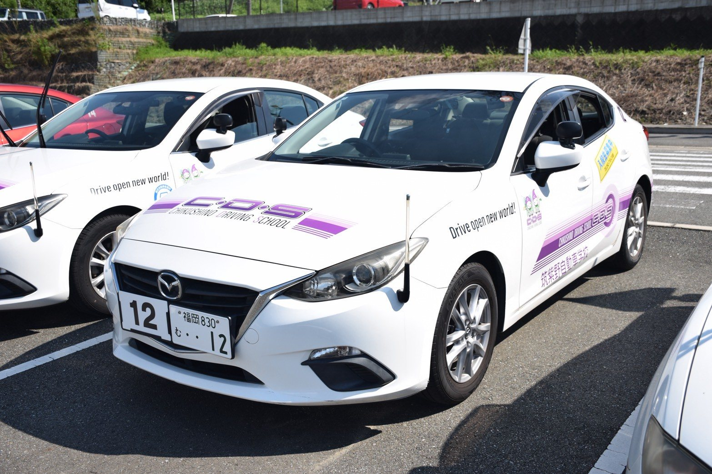
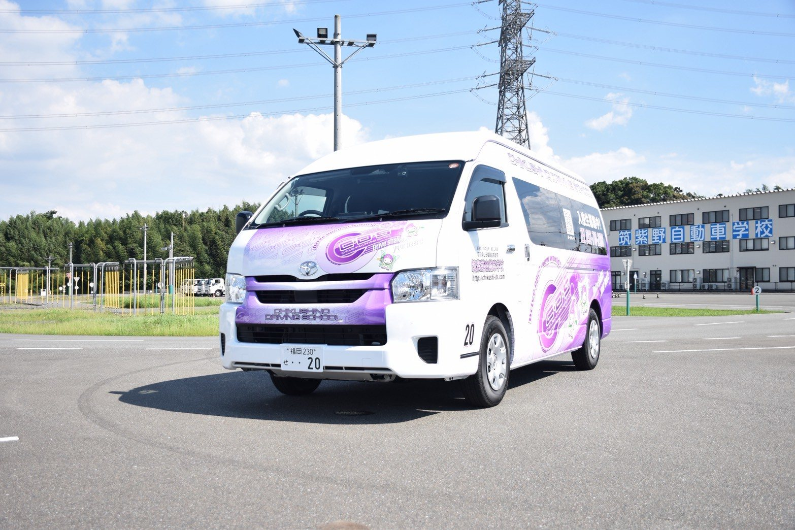
ここから、
運転が好きになる。 Drive open new world. 新しい車界へ 無料送迎あり
1
2
3
運転が好きになる。 Drive open new world. 新しい車界へ 無料送迎あり
C使用写真
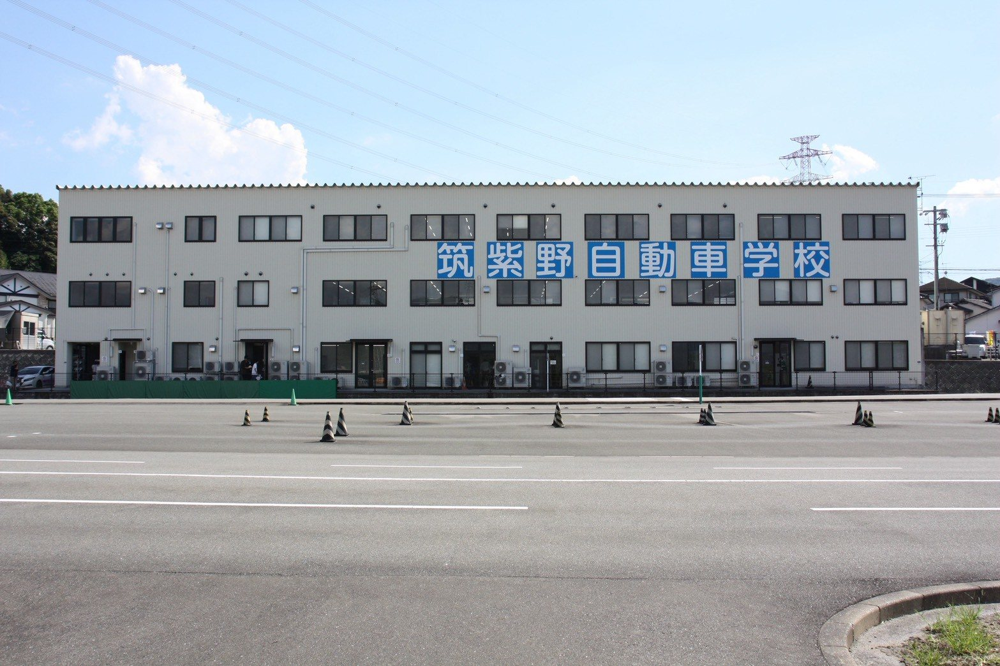
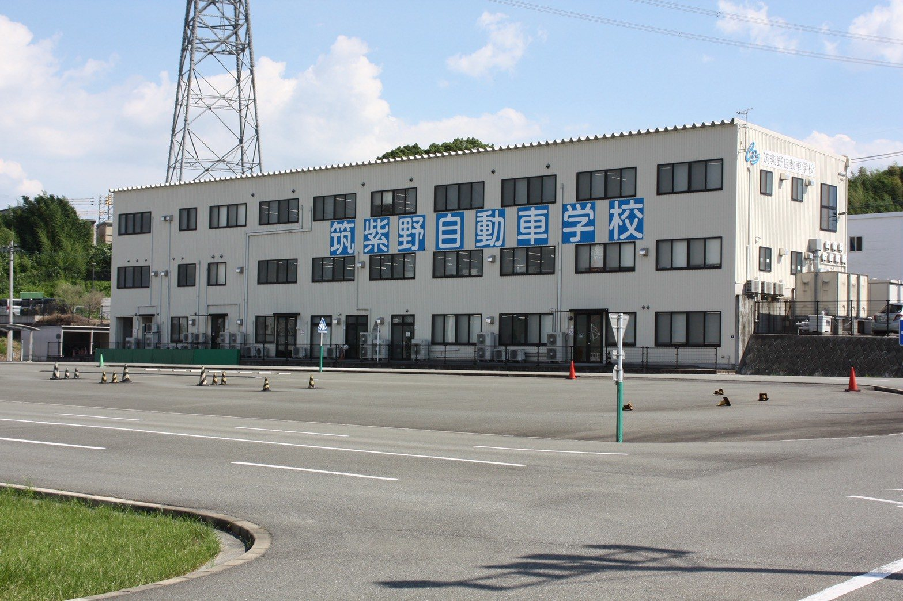
D変更理由
- 現在使っている教習車を最初の画面で正しく伝える。
- 送迎車両の外観を最新状態へ合わせる。
- 学校名が読める校舎写真で実在感を出す。
- ナビの「料金プラン」を削除して入口を整理する。
- 「通う理由」はフッターバナーだけに集約する。
- 料金シミュレーターはトップのみとし、サブページは正式料金表を見せる。
普通車
シミュレーター中心のページを、正式料金表、割引、オプション、内訳、必要書類が順番に分かるページへ変更します。
A現在の画面
B変更後モック
普通自動車 基本料金
ATMTオプション
| 現有免許 | 一般 | 学生 | 繁忙期 |
|---|---|---|---|
| なし | 322,850円 | 327,850円 | 344,850円 |
| 原付 | 319,550円 | 324,550円 | 341,550円 |
| 二輪 | 249,150円 | 254,150円 | 271,150円 |
現有免許なし / AT
- 一般
- 322,850円
- 学生
- 327,850円
原付免許あり / AT
- 一般
- 319,550円
- 学生
- 324,550円
二輪免許あり / AT
- 一般
- 249,150円
- 学生
- 254,150円
料金内訳その他費用
料金内訳
入学金・教習料金総額へ含む
仮免許手数料別途
C正式資料
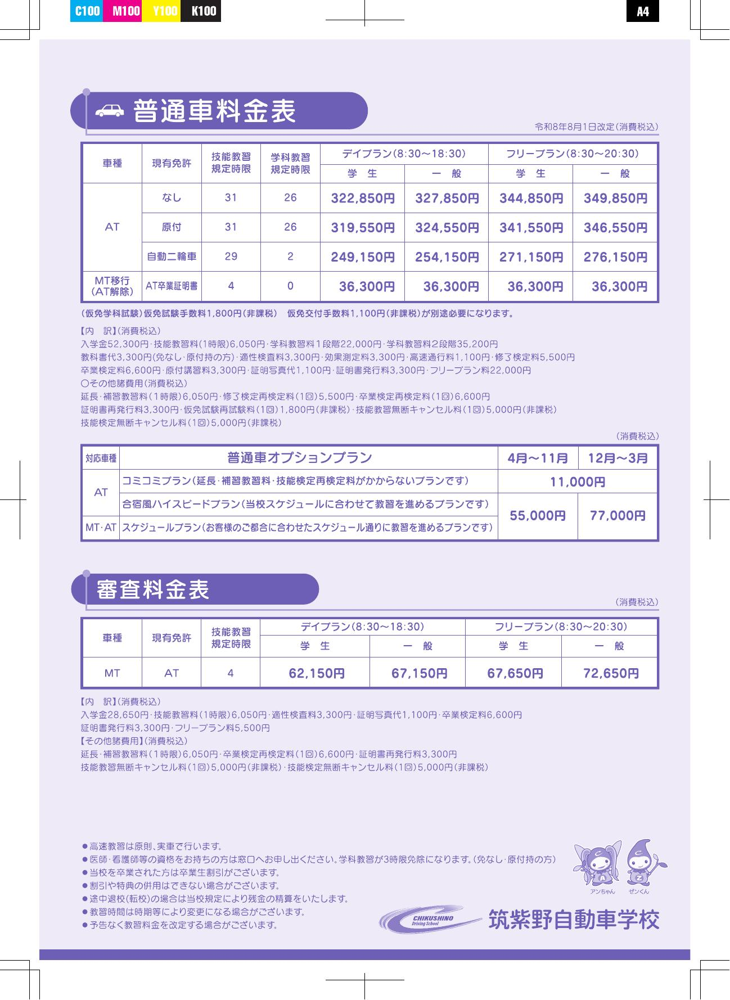
普通自動車料金表を開くD変更理由
- 情報順: 料金表 → 割引・注意 → 内訳 → その他費用 → 必要書類。
- スマホ: 横長表をカードへ変換し、横スクロールを発生させない。
- シミュレーター: このページから削除し、トップへ一本化する。
- オプション: コミコミ、スケジュール、高速プランを同ページ内で選べるようにする。
- 根拠: 2026年8月1日適用の正式PDFを唯一の料金根拠にする。
準中型
現有免許ごとの違いを先に選べる構造にし、PCでは比較表、スマホでは1条件1カードで表示します。
A現在の画面
B変更後モック
現在お持ちの免許を選択
なし原付二輪普通AT普通MT
| 現有免許 | 一般 | 学生 | 繁忙期 |
|---|---|---|---|
| なし | 401,280円 | 406,280円 | 423,280円 |
| 普通AT | 177,760円 | 182,760円 | 188,760円 |
| 普通MT | 152,240円 | 157,240円 | 163,240円 |
免許なし
- 一般
- 401,280円
- 学生
- 406,280円
普通AT免許あり
- 一般
- 177,760円
- 学生
- 182,760円
普通MT免許あり
- 一般
- 152,240円
- 学生
- 157,240円
料金内訳その他費用
C正式資料・写真
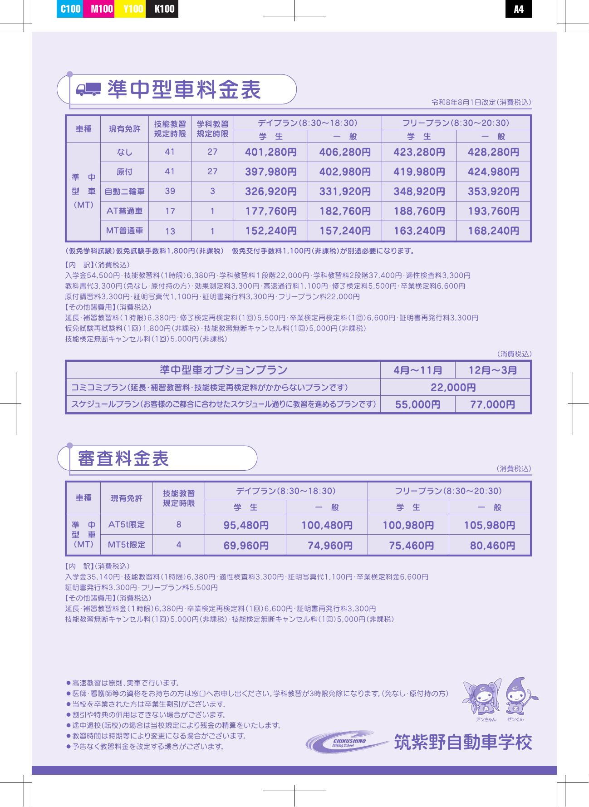
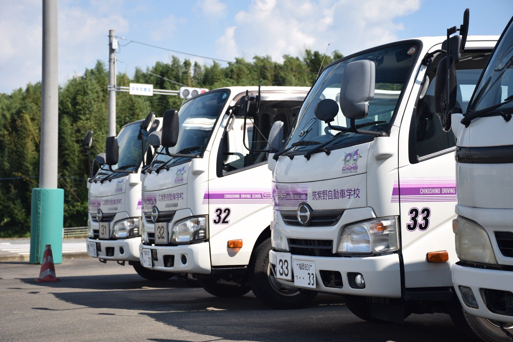
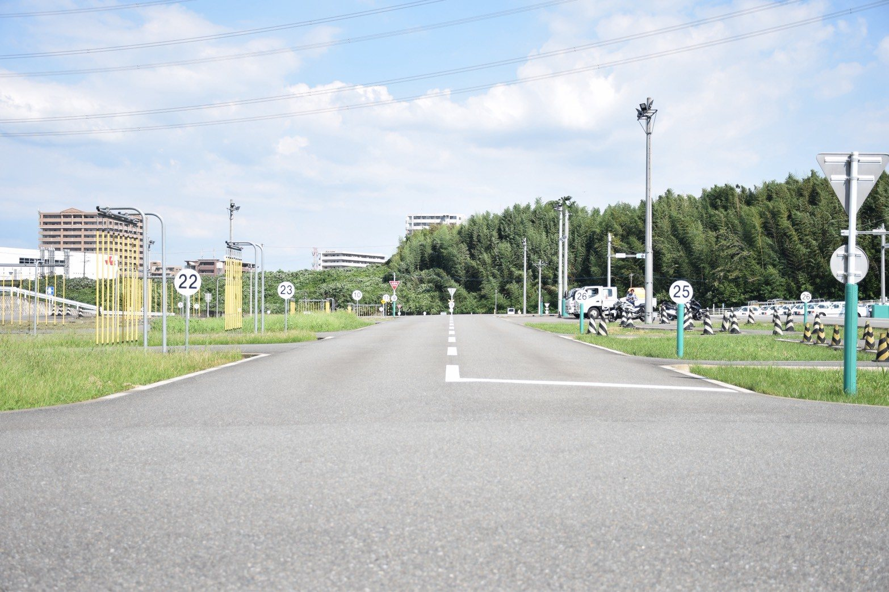
D変更理由
- 最初の判断: 5種類の現有免許から自分の条件を選ぶ。
- 料金区分: 一般・学生・繁忙期を同じ行で比較する。
- 限定解除: 5t限定AT・MTは同ページ内の別ブロックへ整理する。
- 写真: 実際の準中型教習車とコースを使用する。
- スマホ: 1カード内で条件と金額を完結させる。
二輪・限定解除
大型・普通・小型とAT・MTを選択式で整理し、切れている旧図解は使わず、料金と受講条件をHTMLで表示します。
A現在の画面
B変更後モック
取得したい二輪免許
大型普通小型
MTAT
| 現有免許 | 基本料金 | 繁忙期 |
|---|---|---|
| なし・原付 | 正式PDF値 | 正式PDF値 |
| 普通車 | 正式PDF値 | 正式PDF値 |
| 二輪免許 | 正式PDF値 | 正式PDF値 |
普通二輪 MT / 免許なし
- 基本料金
- 正式PDF値
- 繁忙期
- 正式PDF値
普通二輪 MT / 普通車あり
- 基本料金
- 正式PDF値
- 繁忙期
- 正式PDF値
料金内訳限定解除を見る
C正式資料・写真
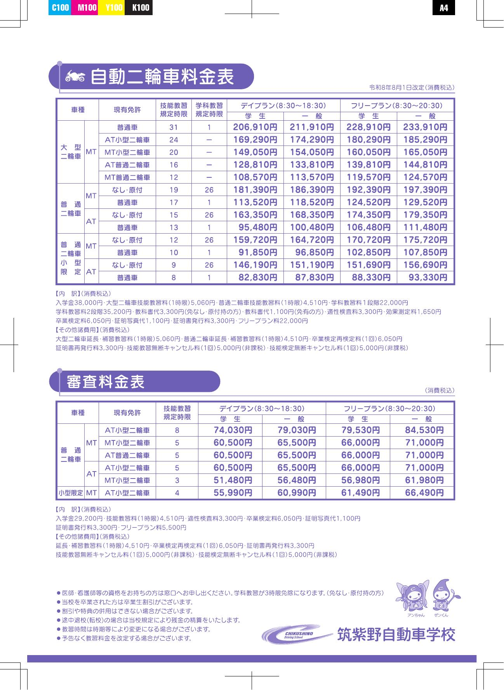
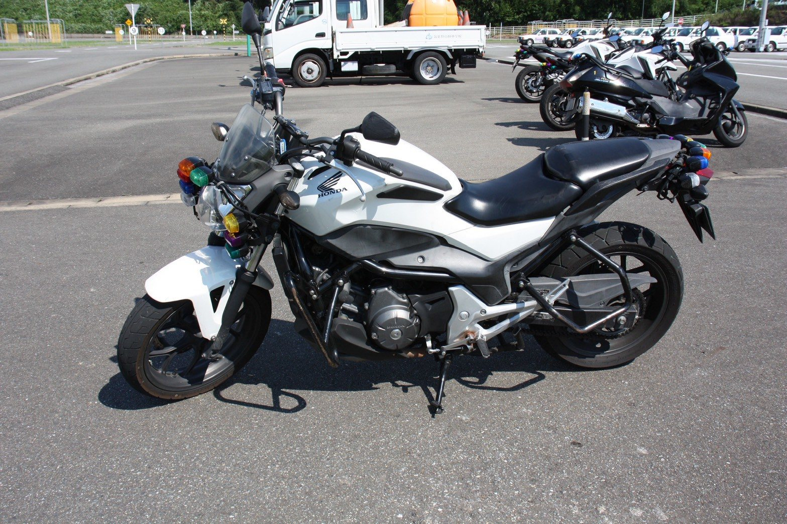
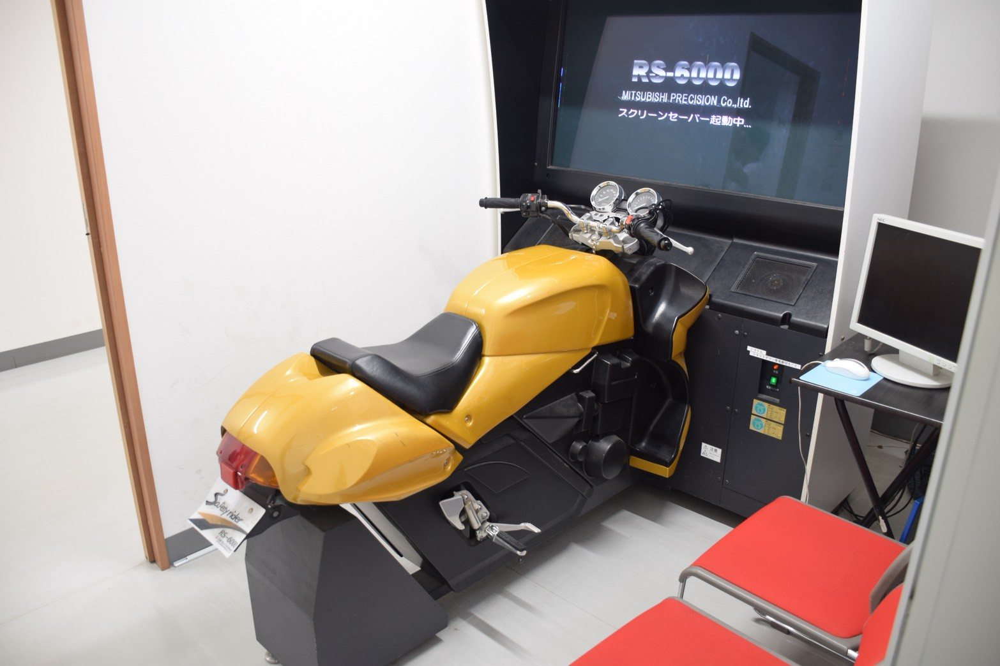
D変更理由
- 大型を追加: 料金シミュレーターと料金ページの両方で大型二輪を扱う。
- 分類: 大型・普通・小型、AT・MT、現有免許を順に選ぶ。
- 図解削除: 上下が切れる旧画像を廃止し、文章と料金をHTML化する。
- 限定解除: 対象免許と必要時限、審査までを同じ構造で表示する。
- 実写真: 教習車とシミュレーターを用途別に掲載する。
入校案内
「入校まで」と「入校後から免許交付まで」を1ページへ統合し、利用者が今どの段階か迷わない流れにします。
A現在の画面
B変更後モック
入校までの手続き
1コース・料金を確認
2資料請求・仮申込
3学校から確認連絡
4書類・支払いを準備
5入校説明・適性検査
免許交付まで
1第一段階の教習
2修了検定・仮免
3第二段階の教習
4卒業検定
5免許試験場で交付
C統合する情報
- 入校資格: 年齢、視力、聴力、色彩識別、身体条件。
- 必要書類: 住民票、本人確認書類、眼鏡、免許証。
- 支払い: 現金、振込、ローン等の正式対応方法。
- 検定: 修了検定と卒業検定の受付・条件・注意。
- 統合:
licenseはこのページへ転送する。
D変更理由
- 申込前と入校後の流れを別ページで探す必要をなくす。
- 各段階から料金、申込、検定案内へ直接移動できるようにする。
- 旧画像の小さい文字を廃止し、スマホでも読めるHTMLにする。
- 利用者の次の行動だけを各段階に1つずつ置く。
高齢者・原付・ペーパードライバー
長い説明を減らし、対象者、予約方法、当日の流れを実写真と3ステップで伝えます。
A現在の画面
B変更後モック
高齢者講習通知確認 → 電話予約 → 来校
原付講習電話予約 → 持参物 → 受講
ペーパー講習相談 → 内容決定 → 練習
C使用写真
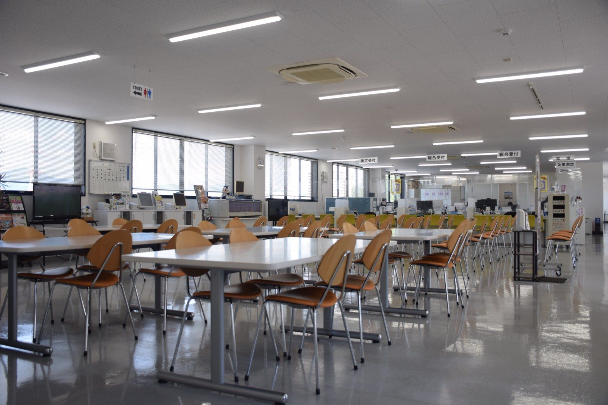
D変更理由
- 高齢者: 通知はがき、電話番号、所要時間、持参物を最優先にする。
- 原付: 1枚の実写真と短い3ステップへ絞り、送迎案内は載せない。
- ペーパー: 不安や練習内容を電話で相談できることを明確にする。
- CTA: 各ページの主ボタンは電話予約または相談の1つに絞る。
在校生・日程
更新できない画像カレンダーを廃止し、Google Sheetsから「本日・今週・今月」の日程を公開します。
A現在の画面
B変更後モック
教習・検定の日程
本日今週今月
修了検定 受付受付中
卒業検定 集合残り2枠
休校日休校
学科教習 第1教室通常
C公開項目
- 日付・開始時刻
- 分類: 教習、修了検定、卒業検定、休校、重要連絡。
- 受付状況: 受付中、締切、変更、休校。
- 対象: 普通車、準中型、二輪、全在校生。
- 更新元: 学校スタッフ用の日程シート。
D変更理由
- 古い画像が残る問題をなくす。
- スマホで日付と内容を同じ行に収める。
- 検定ページと在校生ページの重複日程を一本化する。
- 学校側がシートを更新すると公開画面にも反映する。
申込フォーム
同じ内容を何度も入力する長いフォームを、選択式3ステップと概算料金確認へ変更します。
A現在の画面
B変更後モック
1 内容2 本人情報3 確認
ご希望の内容を選択
用件
仮入校申込資料請求相談
取得する免許
普通AT普通MT準中型普通二輪大型二輪その他
資料の受取方法
デジタル郵送
現在の概算料金322,850円〜
C統合・削除項目
- 一本化: 車種と料金コース、職業と学生/一般、料金プランと教習プラン。
- STEP 1: 用件、免許、プラン、オプション。
- STEP 2: 氏名、生年月日、住所、連絡先。
- STEP 3: 受取方法、支払い、同意、最終確認。
- 削除: 同じ回答を再度求める項目、制作都合の補足文。
D送信後の動き
- Workerが必須項目と不正送信を検証する。
- 正式マスターで料金を再計算する。
- Google Sheetsの申込一覧へ保存する。
- 利用者と学校へ同じ内容の確認メールを送る。
- デジタルは資料リンク、郵送は「郵送対応待ち」にする。
指導員
実写真と修正版名簿は内部照合だけに使い、公開画面にはニックネーム・趣味・担当と本人寄せ生成画像だけを掲載します。
A現在の画面
B変更後モック
顔と人柄が分かる指導員紹介
さわみん
趣味
孤独の久留米（市内散策）・釣り
四輪二輪
せとさん
趣味
散歩
四輪二輪
C公開範囲
- 実名と実写真は公開しない。
- 公開済みニックネームと趣味を表示する。
- 四輪・二輪の担当をカード内へ表示する。
- 本人確認済みの生成画像だけを使用する。
D確認手順
- 旧Excel内の実写真で本人の顔を確認する。
- 修正版Excelで氏名・ニックネーム・趣味を照合する。
- 四輪・二輪の担当アイコンを表示する。
- AI画像は美化しすぎず、実写真の年齢・輪郭・髪型へ寄せる。
- 現在画像と修正版を並べ、本人確認後だけ公開する。
内部照合資料の取り扱い
実写真・実名入り名簿・生成比較表は本人確認専用としてローカル保管し、GitHubと公開サイトには含めません。
学校・施設・アクセス
汎用イラストを減らし、校舎、教室、シミュレーター、コース、二輪、バスの実写真を目的別に配置します。
A現在の画面
B変更後モック
学ぶ場所を写真で確認
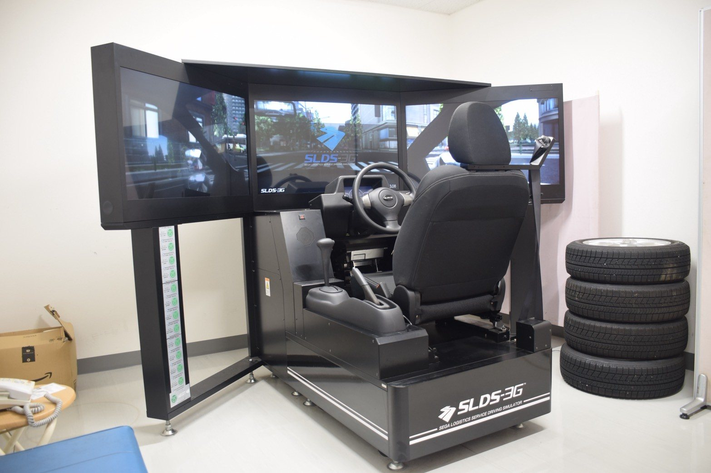
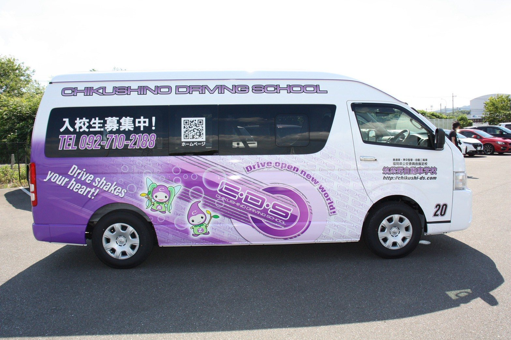
C写真の割り当て
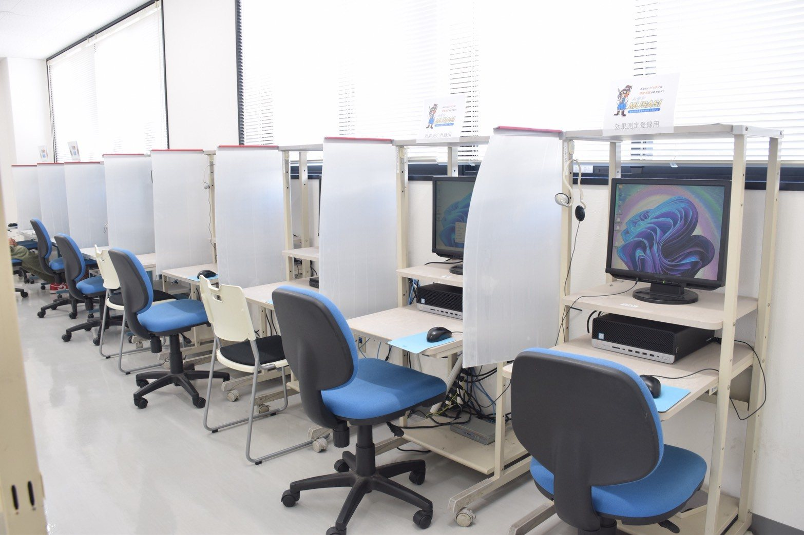
D変更理由
- 学校紹介: 校舎と学校の方針を最初に見せる。
- 施設: 教室、学習設備、四輪・二輪シミュレーターを分類する。
- アクセス: 地図と乗降情報を先に置き、バス写真は補足にする。
- コース: 普通車、準中型、二輪の実車を免許選択の入口に使う。
- 全写真: 58枚の素材一覧から公開候補を選ぶ。
追加写真58枚の確認一覧
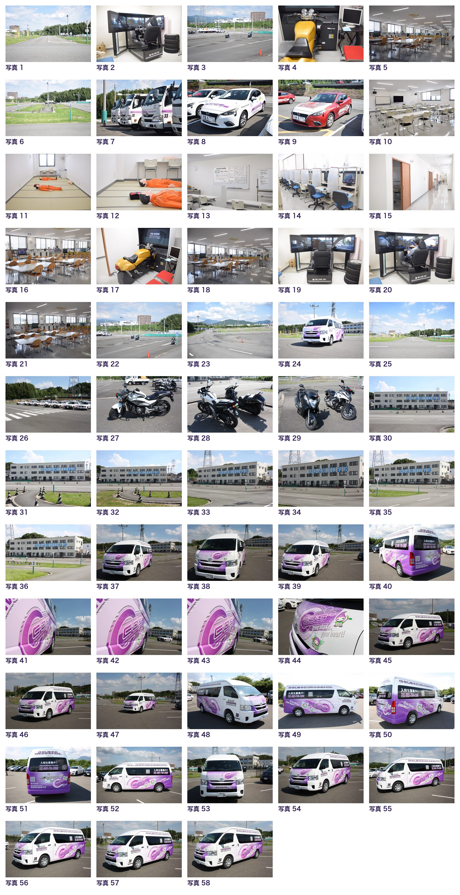
TOPICS・FAQ・その他
重要なお知らせとTOPICSは学校側で更新できるようにし、FAQ、採用、会社概要、個人情報、サイトマップは重複を整理します。
A現在の画面
B変更後モック
ホームページ
夏季の入校受付
教習日程の変更
キャンペーン案内
Google Sheets
| 公開 | タイトル |
|---|---|
| ON | 夏季の入校受付 |
| ON | 教習日程の変更 |
| OFF | 下書き |
Cページ別対応
- FAQ: 料金、送迎、入校、教習、検定で分類する。
- 採用: 仕事内容、条件、待遇、資格支援を事実だけで掲載する。
- 会社概要: 会社・学校情報を可変2列で表示する。
- 個人情報: 申込データの利用目的と保存先を追記する。
- サイトマップ: 統合・転送後の正式URLだけを掲載する。
D変更理由
- 既存WordPress RSSへの依存をなくす。
- 学校スタッフがGoogle Sheetsから公開・非公開を選べるようにする。
- 同じ案内を複数ページに重複掲載しない。
- AIへの制作指示のような不自然な説明文を削除する。
バックエンド・運用
申込保存、料金再計算、自動メール、学校からの公開情報更新をCloudflare Worker、GAS、Google Sheetsでつなぎます。
A現在の状態
- 料金データがトップ、サブページ、GASに重複している。
- WordPress RSSがドメイン移行後に切れる可能性がある。
- 申込Webhookの匿名アクセスと秘密情報の設定確認が必要。
B変更後フロー
利用者
仮申込
仮申込
Worker
検証・再計算
検証・再計算
GAS
保存・メール
保存・メール
Sheets
申込管理
申込管理
学校スタッフ
公開情報シート
GAS API
ホームページ
C管理画面モック
申込一覧お知らせTOPICS日程設定処理ログ
| 受付日時 | 氏名 | 用件 | 免許 | 状態 |
|---|---|---|---|---|
| 7/18 09:32 | 筑紫野 太郎 | 仮申込 | 普通AT | 確認待ち |
| 7/18 10:14 | 福岡 花子 | 資料請求 | 準中型 | 郵送対応待ち |
| 7/18 11:03 | 太宰府 次郎 | 相談 | 大型二輪 | 連絡済み |
D実装ルール
- 料金: 1つの正式マスターから画面・申込・GASへ供給する。
- 安全: Workerで必須検証、再計算、ハニーポット、Turnstileを実施する。
- メール: 利用者と学校へ受付内容・概算料金・次の手順を送る。
- 公開情報: お知らせ、TOPICS、日程は60秒キャッシュし、障害時は直前データを表示する。
- 電子署名: 今回は実装しない。
7月18日追加資料の反映範囲
正式料金表、申込項目、指導員情報、施設・車両写真を用途別に確認し、公開に必要な情報だけをサイトへ反映します。原本資料は公開サイトに置きません。
Full page audit
全31画面の実装チェック
トップと共通テンプレート30ページをPC・スマホで確認し、統合先・転送先・変更種別・確認状態を一元管理します。
0 / 31 確認済み